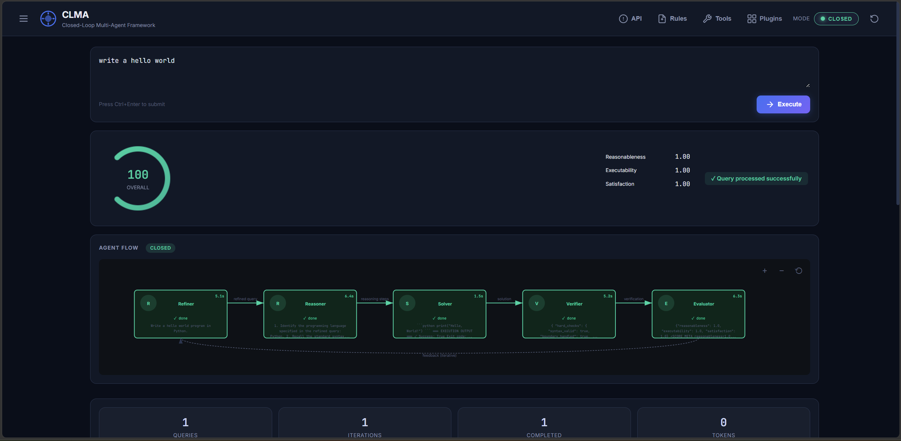
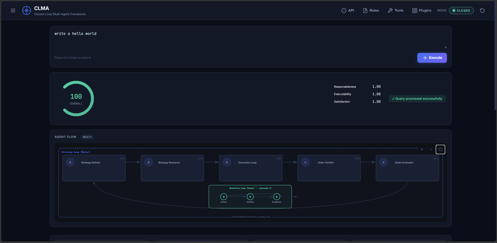

A self-verifying, multi-agent code generation framework with a C++ core engine, real-time Web UI, and an adaptive execution topology that routes your tasks through the optimal agent pipeline automatically.
LLM-generated code should be verified, not trusted.
Unlike linear pipelines, CLMA iterates automatically — generating, verifying, and refining code until quality thresholds are met. No human-in-the-middle needed.
AAN selects the optimal execution topology at runtime — from a direct solver for simple tasks to a recursive tree decomposition for complex multi-module requirements.
Built on a high-performance C++17 foundation with pybind11 bindings. Orchestrator, DAG Processor, and Rule Engine run at native speed for minimal overhead.
Dark-themed interface with live SVG flow graphs, score gauges, execution timelines, and SSE-driven streaming displays every agent action as it happens.
OpenAI, Anthropic, DeepSeek, Gemini, and local models — all swappable through a unified adapter. No vendor lock-in. Works fully offline with local models.
Fast Path, Single Loop, DAG, Nested Multi-Loop, and Adaptive Agent Network — auto-selected by query complexity. No manual pipeline configuration required.
Three layers from UI to native execution.
From 2-second Fast Path to full adaptive topology.
Bypasses the full pipeline for trivial tasks. Direct solver → auto-execute → score. Sub-2s response.
~2sRefiner → Reasoner → Solver → Verifier → Evaluator with iterative score feedback. Best quality/time trade-off.
~5sC++ DAG Processor decomposes multi-component tasks into independent sub-tasks executed in parallel.
~10-25sOuter strategy loop + inner execution loop. Solves architectural tasks that single-pass pipelines cannot.
~40sSelf-organizing topology: Direct, Chain, Parallel, or Tree — auto-selected by query complexity. Recursive decomposition.
NEWReal-time agent visualization, scoring, and session management.

📸 Single Loop Mode — Flow Graph & Score Dashboard'">
📸 Nested Multi-Loop — Strategy + Execution Layers'">Measured against DeepSeek API (single LLM call ~5-8s).
| Task | Fast Path | Single Loop | DAG | Nested Loop | AAN |
|---|---|---|---|---|---|
| Hello World | 2.3s / 0.97 | 4.7s / 0.99 | 5.3s / 0.99 | — | 2.3s / 0.97 |
| Fibonacci | — | 4.7s / 0.99 | 5.3s / 0.99 | — | 4.7s / 0.99 |
| Quicksort | — | 5.1s / 0.98 | — | — | 5.1s / 0.98 |
| Batch file rename | — | 8.1s / 0.98 | 12.0s / 0.97 | — | 8.1s / 0.98 |
| Microservice architecture | — | — | — | 39s / 1.0 ✅ | 28s / 0.99 |
| Multi-component project | — | — | ~25s / 0.97 | — | 22s / 0.97 |
Clone, build, and launch — three commands.
Star the repo, try it out, and join the community. Issues, PRs, and discussions welcome.